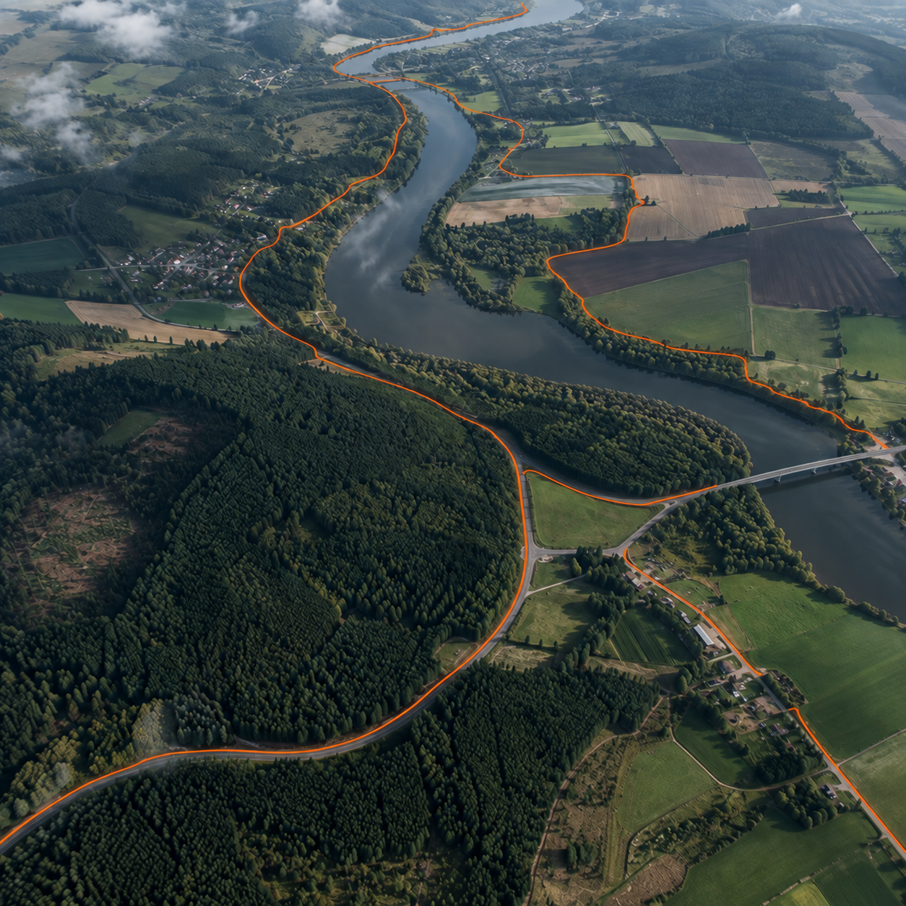
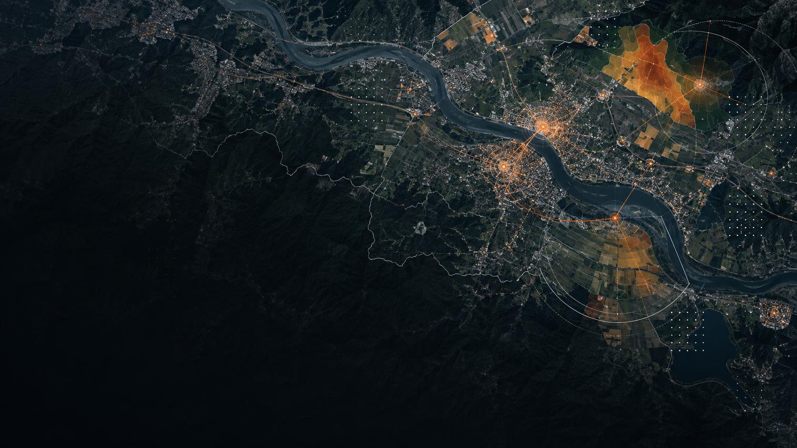
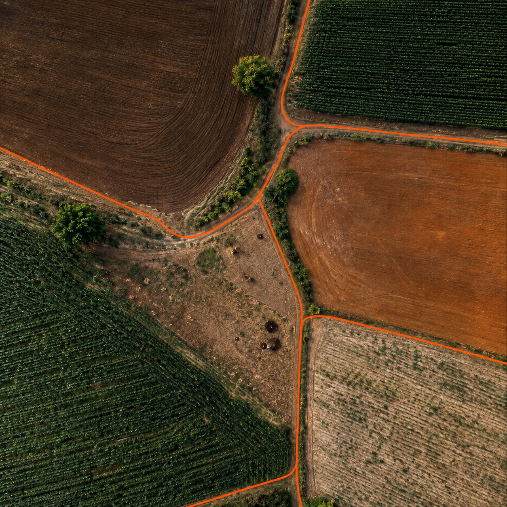
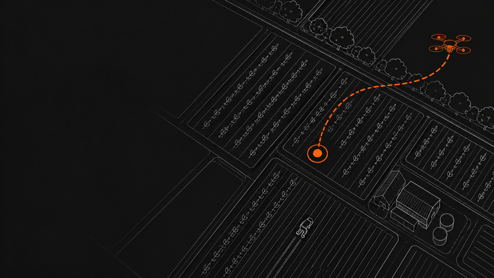
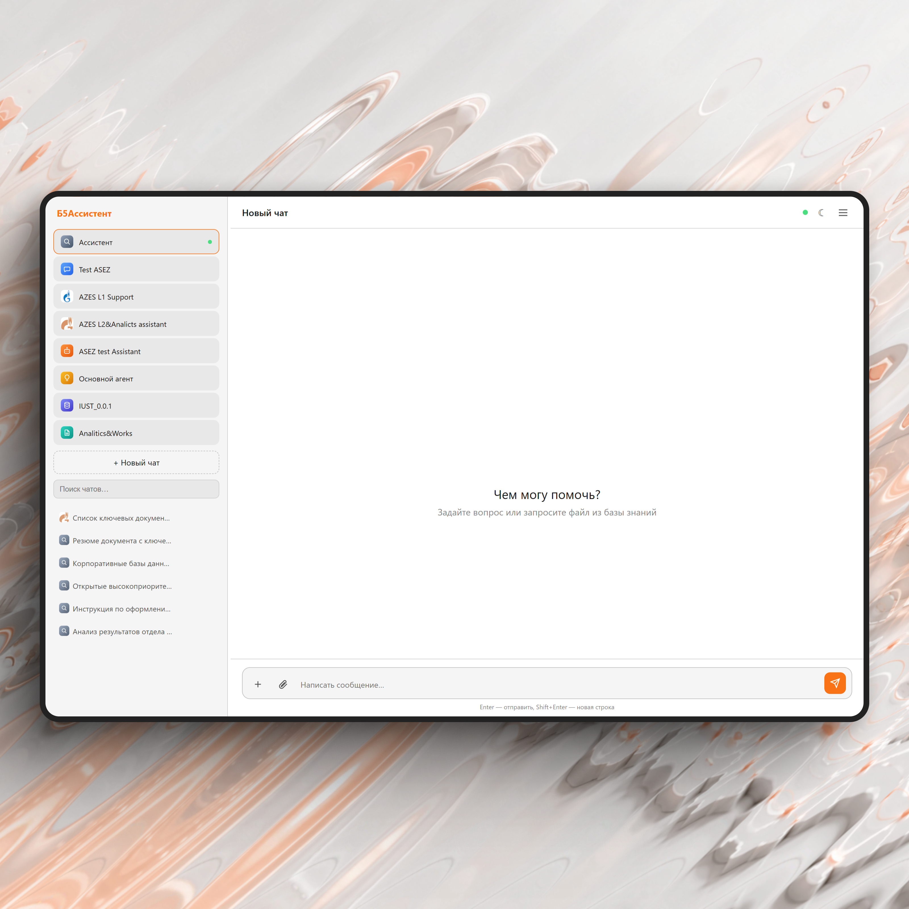

Все данные о территории в одном окне
Б5ГИС собирает пространственные данные из любых источников в единую интерактивную карту. Вместо разрозненных таблиц и файлов — наглядная аналитика и решения, основанные на данных.
Реестр отечественного ПО, запись № 23338 от 25.07.2024Б5ГИС
От загрузки данных до дашборда руководителя
Работайте с картой, объектами, аналитикой и отчётностью в единой системе — без ручного переноса данных между программами.

Карта и слои
Визуализация территории или объекта 360°
Комбинируйте векторные и растровые данные, космоснимки и картоосновы. Приближайте объект, раскрывайте его в 3D и сравнивайте состояние территории на разные даты.

Данные
Единое хранилище
Перетащите файл в окно — система распознает формат и предложит сопоставить поля, после чего слой появится на карте с автоматическим стилем. Работайте с SHP, GeoJSON, KML, CSV, XLS, TIFF, TAB, MID/MIF, SXF, GML, WKT и другими форматами. Подключённые государственные источники обновляются по расписанию.
Объекты
Карточка объекта
Кликайте по объекту на карте и получайте всю информацию о нём: атрибуты, характеристики, фотографии и видео с осмотра. Добавляйте медиа прямо с полевого выезда. Администратор один раз настраивает шаблон карточки для всех объектов этого типа.

Навигация
Поиск и фильтры
Находите объект по адресу, координатам, кадастровому номеру или любому атрибуту. Собирайте сложные фильтры из нескольких условий, видите подсветку на карте и в таблице одновременно, отбирайте объекты рисованием области и сохраняйте выборку.

Аналитика
Пространственная аналитика
Измеряйте длину, площадь и периметр, стройте тематические картограммы и тепловые карты, выполняйте оверлейные и кросс-слойные операции. Выберите показатель и зону — система построит карту и покажет динамику в графике рядом. Результат закрепляется на дашборде территории.

Отчётность
Дашборды и отчёты
За секунды изучайте ключевые метрики территории. Собирайте автоматизированные отчёты к совещанию из готовых блоков: карта, таблица, легенда, снимок объекта. Выгружайте в PDF или XLSX и отправляйте на печать без ручного оформления.
Безопасность
Роли и доступ
Создавайте роли и отмечайте в матрице доступные слои и действия — новые сотрудники сразу получают нужный набор прав. Для внешних пользователей включается защищённый гостевой просмотр по ссылке без авторизации.
От данных к решению
Система объединяет пространственные источники, приводит их к общей модели и показывает результат в карте, таблицах и дашбордах.
- Интеграция с внутренними и государственными источниками
- Автоматическое обновление и контроль качества
- Наглядная визуализация для специалистов и руководителей
Больше возможностей для развития
Актуальная картина территории сокращает время на анализ и помогает принимать решения на единой доказательной базе.
- Меньше ручной обработки и дублирования данных
- Быстрый переход от показателя к объекту на карте
- Единые правила работы для всей команды
Что говорят пользователи
Б5ГИС работает в администрациях городов и регионов, корпорациях и отраслевых ведомствах.
«Точная географическая привязка объектов позволяет значительно сократить затраты на услуги кадастровых инженеров. За 2–3 минуты специалист получает поворотные точки участка. Если учитывать масштабы города, экономия получается солидная».
«Мы хотим, чтобы цифровая карта стала инструментом прежде всего для развития сельских территорий».
«Инструмент помогает анализировать пассажиропотоки и принимать решения по размещению остановок в транспортной сети города».
Посмотрите систему на своих данных
Загрузим фрагмент ваших данных, чтобы вы увидели работу Б5ГИС на реальной территории, а не на витринном примере.
Выберите подходящий контур
Функциональность сохраняется при развёртывании в инфраструктуре заказчика и в облачной модели.
| Лицензия | Назначение | Стоимость | Поддержка в год |
|---|---|---|---|
| ЛокальнаяОдна инсталляция | Дистрибутив, Docker-образ или образ виртуальной машины | 10 млн ₽ | 2 млн ₽ |
| КорпоративнаяДо пяти инсталляций | Для компаний с филиальной сетью | 15 млн ₽ | 3 млн ₽ |
| Корпоративная +Без ограничения инсталляций | Для федеральных компаний и распределённых структур | 50 млн ₽ | 10 млн ₽ |
| ПростаяОдин портал | До 500 ГБ базы данных и 500 ГБ файлов | 0,5 млн ₽ | 0,5 млн ₽ |
| ПродвинутаяДо пяти порталов | До 1000 ГБ базы данных и 1000 ГБ файлов | 1 млн ₽ | 1 млн ₽ |
| ПрофессиональнаяДо 91 портала | До 2000 ГБ базы данных и 2000 ГБ файлов | 5 млн ₽ | 5 млн ₽ |
| КастомизированнаяИндивидуальный контур | Когда проект выходит за рамки стандартных лицензий | По запросу | 20% |
| УчебнаяДо трёх порталов | Для образовательных организаций | 0,3 млн ₽ | 0,3 млн ₽ |
Документы и полезные материалы
Руководство по установке и эксплуатации, описание жизненного цикла, функциональных характеристик и технических средств хранения исходного кода.
Часто задаваемые вопросы
Собрали то, что чаще всего спрашивают на первых встречах.
Входит ли Б5ГИС в реестр отечественного ПО?
Да. Реестровая запись № 23338 от 25.07.2024. Продукт можно закупать организациям с требованием использовать отечественное программное обеспечение.
Где разворачивается система?
Оба варианта. В облаке инфраструктурой управляем мы, в варианте on-premise система разворачивается на серверах заказчика. Функциональных различий нет. Развернуть on-premise может наша команда — тогда нужен доступ к инфраструктуре — либо специалисты заказчика по дистрибутиву и документации.
Какую нагрузку выдерживает система?
Не менее 1 000 000 обрабатываемых записей в год и не менее 50 одновременных пользователей. Время отклика — до 6–9 секунд на простых операциях и до 30 секунд на сложных запросах. На практике массив в 1,5 млрд записей обрабатывается за 30–40 секунд.
Что нужно пользователю для работы?
Браузер и учётная запись, которую выдаёт администратор. Поддерживаются Google Chrome, Яндекс.Браузер, Mozilla Firefox и Opera. При облачном размещении администрирование инфраструктуры не требуется: достаточно заводить пользователей, настраивать слои и импортировать данные через интерфейс.
С какими форматами работает Б5ГИС?
Импорт: SHP, GeoJSON, KML, MID/MIF, TAB, WKT, TXT, XLS, CSV. Экспорт: SHP, GeoJSON, KML, DXF, TAB, MID/MIF, CSV, XLSX, WKT и снимок карты в JPEG. Внешние сервисы подключаются по WMS, WMTS, WCS, WFS, REST ArcGIS и через тайловые слои. В production работают интеграции с НСПД Росреестра, СМЭВ, ЕСИА, ЕФИС ЗСН и другими государственными и отраслевыми ресурсами.
Можно ли встроить Б5ГИС в наш ИТ-ландшафт?
Да. Доступен API на JSON-RPC 2.0 через HTTP POST с операциями чтения, создания, обновления и удаления данных для любых датасетов, а также специализированными методами. Аутентификация выполняется по ключу пользователя. Изменения API выпускаются с сохранением обратной совместимости.
Как разграничивается доступ?
Администратор назначает роли и права на просмотр, добавление, редактирование и удаление объектов и слоёв. В журнале фиксируются вход в систему, неудачные попытки входа и все операции с данными. Доступ к журналу определяет администратор заказчика.
Как устроено резервное копирование?
Резервное копирование настраивается автоматически или выполняется вручную средствами СУБД. Восстановление данных гарантируется на момент не более чем за 10 часов до сбоя. При корректном перезапуске оборудования система восстанавливает работу автоматически.
Кому Б5ГИС не подойдёт?
Проектам с объёмом менее 1000 записей в год — полноценная геоинформационная система там, вероятно, будет избыточна.
Что нужно, чтобы начать?
Мы разворачиваем демостенд и загружаем в него ваши данные. На первой встрече обсуждаем источники, роли пользователей и контур развёртывания.
Есть ли обучение и техническая поддержка?
Да. Продукт сопровождается обучением, видеоуроками, рабочими руководствами и поддержкой по SLA. Критические инциденты — прерывание работы более 15 минут — устраняются не дольше 4 часов, работа ведётся круглосуточно. Высокий приоритет — до 8 часов в рабочие дни, средний — до 24 рабочих часов.
Поможем определить объём работ, сроки и подходящее решение
Если вы создаёте новую систему, развиваете действующую или переходите на отечественное ПО — начнём с короткого разговора.